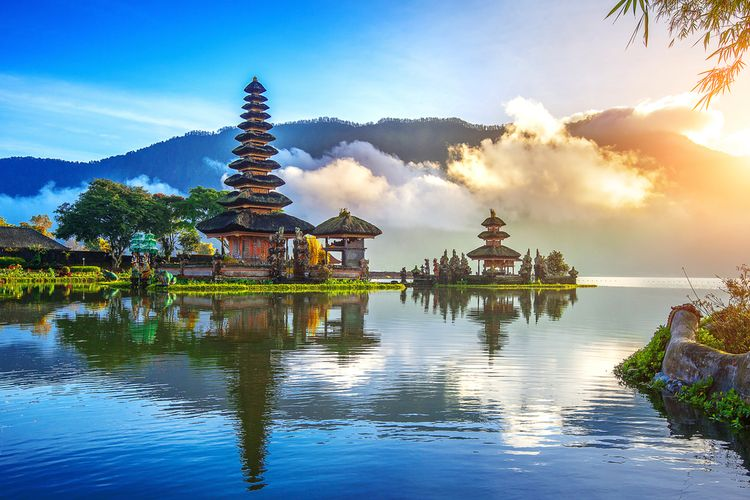

INDONESIA terdiri beribu-ribu pulau

Beraneka ragam Budaya,Agama,Suku dan Ras
Destinasi INDONESIA dari Sabang sampai Marauke
PULAU BALI
Pulau Bali adalah sebuah pulau yang terletak di provinsi Bali, Indonesia. Secara geografis, pulau ini terletak di sebelah timur pulau Jawa, di antara Lombok di sebelah barat dan Nusa Penida di sebelah tenggara.
Bali terkenal sebagai tujuan wisata yang populer di dunia dengan keindahan alamnya, budaya yang kaya, dan pantai-pantai yang menakjubkan. Pulau ini memiliki beragam atraksi wisata, mulai dari pantai-pantai yang indah seperti Kuta, Seminyak, dan Nusa Dua, hingga situs pura dan kuil yang khas seperti Pura Tanah Lot, Pura Besakih, dan Pura Uluwatu.
Selain itu, Bali juga terkenal dengan kehidupan malamnya yang bersemangat, seni dan kerajinan tangan seperti ukiran kayu dan batik, serta adat istiadat yang masih dijaga dengan baik oleh penduduk setempat. Pulau ini menawarkan berbagai kegiatan seperti selancar, menyelam, yoga, spa, dan berbagai jenis olahraga air lainnya.
Bali dapat diakses melalui Bandara Internasional Ngurah Rai di Denpasar, yang melayani penerbangan internasional dan domestik. Jika Anda berencana mengunjungi Bali, pastikan untuk merencanakan perjalanan Anda dengan baik dan menjelajahi semua yang pulau ini tawarkan.

Hidangan ini sering ditemui di restoran-restoran Bali dan juga populer di kalangan wisatawan yang ingin mencoba makanan khas Bali yang autentik.

Tari ini terkenal karena menggunakan vokal "cak" yang diucapkan oleh sekelompok penari pria yang duduk melingkar.
Tentang
Pulau Bali terletak di Indonesia, tepatnya di bagian selatan Kepulauan Nusa Tenggara. Secara geografis, koordinat pulau Bali adalah antara 8°25' LS - 8°50' LS dan 114°25' BT - 115°42' BT. Bali terletak di sebelah barat Pulau Lombok dan dikelilingi oleh Laut Bali di sebelah selatan, Laut Jawa di sebelah barat, serta Selat Bali di sebelah timur.
Untuk memberikan gambaran lebih jelas, Bali terletak sekitar 3.2 kilometer (2 mil) di sebelah timur Pulau Jawa. Bali adalah salah satu pulau yang paling terkenal di Indonesia dan menjadi tujuan wisata yang populer baik bagi wisatawan domestik maupun mancanegara.
Harap dicatat bahwa informasi ini berdasarkan pengetahuan hingga tahun 2021 dan letak geografis mungkin tidak berubah secara signifikan sejak saat itu.
RAJA AMPAT
Raja Ampat adalah sebuah kepulauan yang terletak di Provinsi Papua Barat, Indonesia. Secara geografis, Raja Ampat berada di bagian barat Pulau Papua, tepatnya di sebelah barat laut Sorong. Koordinatnya berkisar antara 0° 35' LU - 1° 45' LU dan 130° 50' BT - 134° 20' BT.
Raja Ampat terdiri dari empat pulau utama, yaitu:
- Waigeo
- Salawati
- Batanta
- Misool
Kepulauan ini terkenal dengan keindahan alam bawah lautnya yang sangat kaya akan keanekaragaman hayati, terumbu karang, dan biota laut yang menakjubkan. Raja Ampat menjadi surga bagi para penyelam dan pecinta alam.
Untuk mencapai Raja Ampat, umumnya wisatawan terbang ke Kota Sorong terlebih dahulu, kemudian melanjutkan perjalanan dengan menggunakan kapal laut menuju pulau-pulau di Raja Ampat.
Perlu dicatat bahwa informasi ini berdasarkan pengetahuan hingga tahun 2021, dan letak geografis mungkin tidak berubah secara signifikan sejak saat itu.
Tentang

Raja Ampat terletak di Provinsi Papua Barat, Indonesia. Secara geografis, kepulauan Raja Ampat terletak di sebelah barat laut Kota Sorong, dengan koordinat berkisar antara 0° 35' LU - 1° 45' LU dan 130° 50' BT - 134° 20' BT. Kepulauan ini terdiri dari empat pulau utama, yaitu Waigeo, Salawati, Batanta, dan Misool, serta pulau-pulau kecil lainnya di sekitarnya.
CANDI BOROBUDUR
Candi Borobudur adalah candi Buddha yang terletak di Magelang, Jawa Tengah, Indonesia. Candi ini merupakan salah satu keajaiban arsitektur dunia dan menjadi salah satu tujuan wisata yang populer di Indonesia.
Candi Borobudur dibangun pada abad ke-8 oleh Dinasti Syailendra. Candi ini terdiri dari sembilan tingkat yang membentuk bentuk piramida, dengan total 504 arca Buddha dan 2.672 panel relief yang menggambarkan ajaran Buddha dan kehidupan sehari-hari pada masa itu.
Candi Borobudur dianggap sebagai pusat kebudayaan dan keagamaan pada masa kerajaan Mataram Kuno. Selain menjadi tempat peribadatan, candi ini juga memiliki nilai sejarah dan budaya yang tinggi.
Candi Borobudur telah menjadi Situs Warisan Dunia UNESCO sejak tahun 1991. Setiap tahun, ribuan wisatawan dari seluruh dunia mengunjungi candi ini untuk mengagumi keindahannya dan merasakan atmosfer spiritual yang kental di sekitarnya.
Jika Anda berencana mengunjungi Candi Borobudur, pastikan untuk mempersiapkan waktu yang cukup untuk menjelajahi setiap tingkat dan menikmati panorama indah dari puncak candi. Selain itu, jangan lupa mengenakan pakaian yang sopan dan menghormati aturan kunjungan yang berlaku.
Tentang
Candi Borobudur memiliki 504 arca Buddha dan lebih dari 2.600 panel relief yang menggambarkan cerita dan ajaran Buddha. Relief-relief ini menggambarkan berbagai adegan dari kehidupan Buddha, kisah-kisah jataka (kisah inkarnasi Buddha), serta kehidupan sehari-hari pada masa itu. Selain itu, candi ini juga memiliki stupa-stupa yang melambangkan kesucian dan mencapai nirwana.
LOMBOK
Pulau Lombok adalah sebuah pulau yang terletak di bagian timur Indonesia, lebih tepatnya di provinsi Nusa Tenggara Barat. Pulau ini berada di sebelah barat daya Pulau Bali dan merupakan bagian dari gugusan Kepulauan Sunda Kecil.
Pulau Lombok terkenal dengan keindahan alamnya yang menakjubkan, termasuk pantai-pantai yang memukau, gunung-gunung yang menjulang, serta air terjun, hutan tropis, dan budaya yang kaya.
- Pantai Kuta Lombok
- Gili Trawangan, Gili Air, dan Gili Meno
- Gunung RinjanI
- Air Terjun Sendang Gile
Tentang
Koordinat: Pulau Lombok terletak di antara 8° 18' 53" - 9° 4' 24" Lintang Selatan dan 115° 25' 53" - 116° 30' 24" Bujur Timur.
Letak: Pulau Lombok berada di sebelah timur Pulau Bali dan di sebelah barat Pulau Sumbawa. Secara keseluruhan, Pulau Lombok memiliki luas sekitar 4.725 kilometer persegi.
Relief: Pulau Lombok memiliki relief yang beragam. Bagian barat pulau ini didominasi oleh pegunungan yang termasuk dalam rangkaian pegunungan Sunda Besar. Gunung Rinjani, dengan ketinggian 3.726 meter, merupakan gunung tertinggi di pulau ini. Di sebelah timur, terdapat dataran rendah yang lebih datar.
Hubungi kontak yang ada dibawah ini :
| # | Nama | No Hp | |
|---|---|---|---|
| 1 | Lala | 08xxxxxxx | @lala123 |
| 2 | Lili | 08xxxxxxx | @lili345 |
| 3 | Lulu | 08xxxxxxx | @lulu678 |
@Ditulis oleh FATMA DAN WINDI Pada 3 JULI 2023.